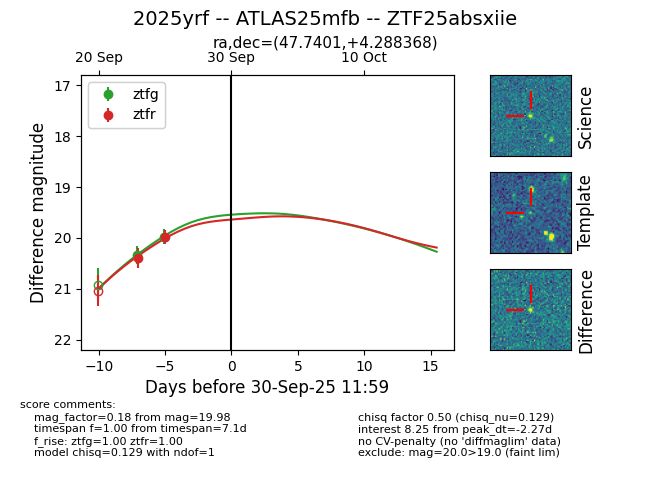
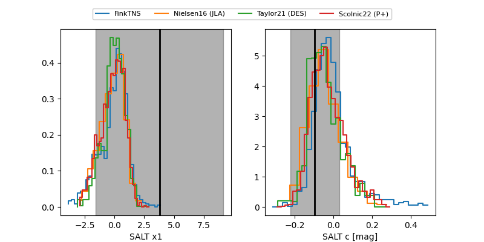

FINK: ZTF25absxiie
Lasair: ZTF25absxiie
ALeRCE: ZTF25absxiie
TNS: 2025yrf
YSE: 2025yrf
ZTF25absxiie (ztf,fink)
2025yrf (tns,yse)
ATLAS25mfb (atlas)
equatorial (ra, dec) = (47.7401,+4.28837)
galactic (l, b) = (175.3066,-43.94413)


last ztfg=19.98, ztfr=19.98
2 ztfg, 2 ztfr detections